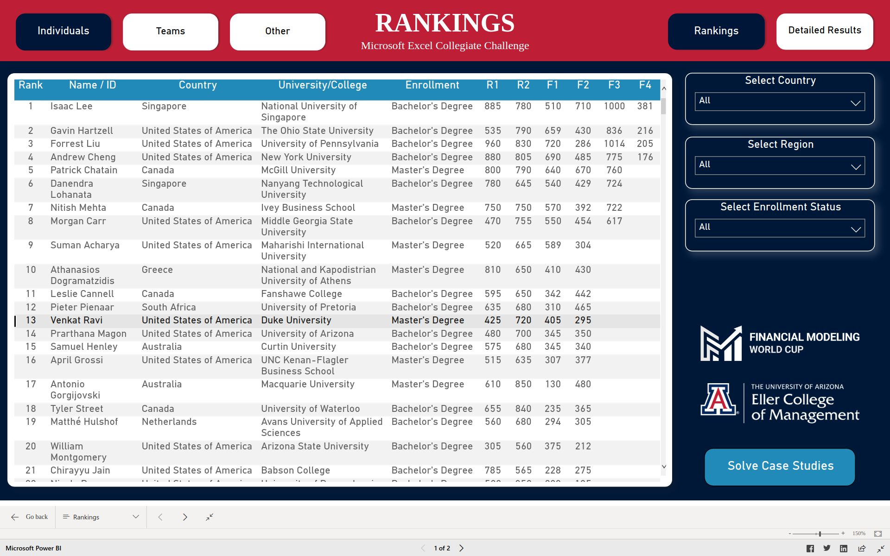
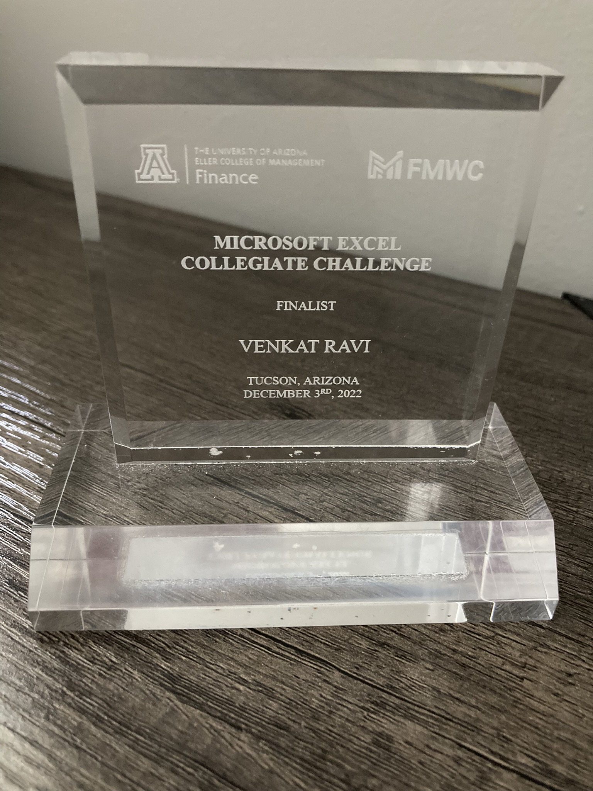
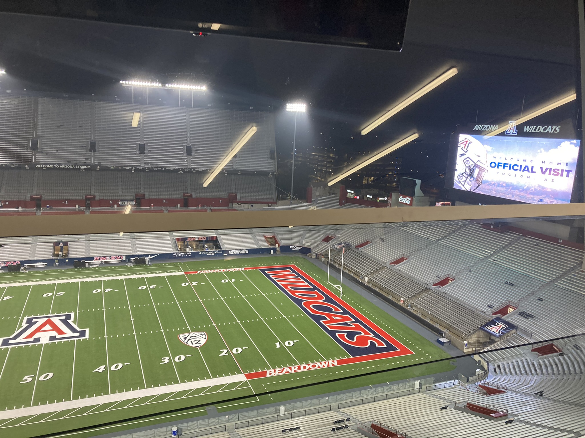

Microsoft Excel Collegiate Challenge
Finance
Excel
Sharing my experience participating in MECC 2022
About
The Microsoft Excel Collegiate Challenge (MECC) is a competition that develops and tests students’ problem-solving, critical thinking, and Excel skills. The Challenge is implemented through a partnership between the Finance Department of the Eller College of Management and the Financial Modeling World Cup (FMWC).
2,072 individuals and 251 teams (up to 3 students) registered from 93 countries and 596 universities/colleges. In total, over 2,800 students registered for the Challenge
Qualifying for finals
I made it to the finals event held at the University of Arizona, Tucson on Decemeber 3, 2022. I was knocked out before last the 8 but I learnt a lot during my preparation for this especially using dynamic arrays in Excel.

Some 📸
|  |  |